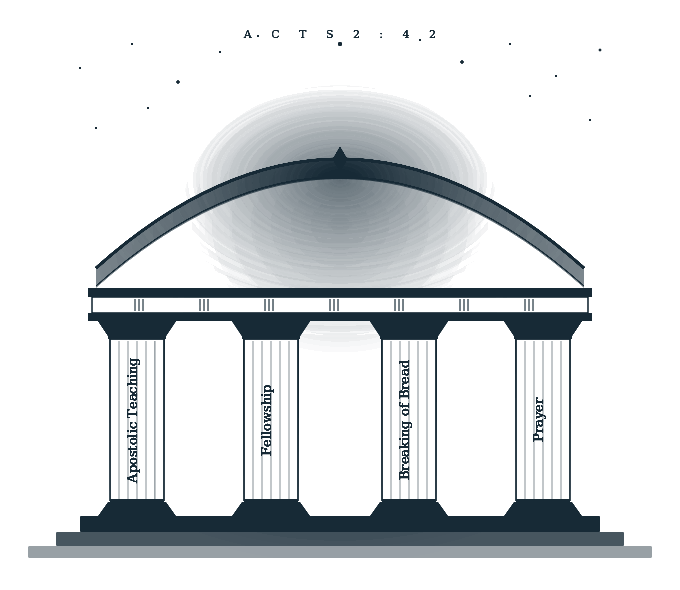
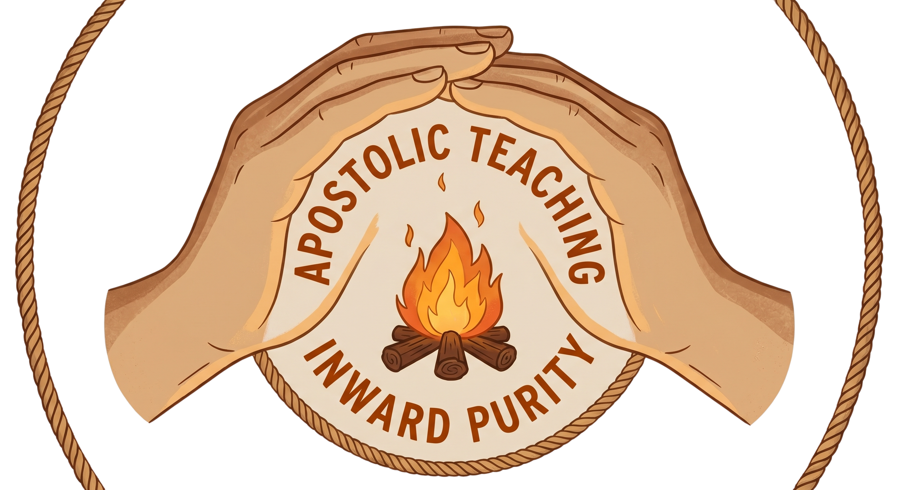

<!-- REPLACE ONLY THE ENTIRE ABOUT SECTION WITH THIS -->

<section class="about" id="about">
  <div class="container">

    <!-- TOP GRID -->
    <div class="about-grid">

      <!-- LEFT COLUMN -->
      <div class="about-text">
        <div class="section-label">Our Foundation</div>

        <h2 class="section-title">
          Built on the Foundation of the <em>Apostles and Prophets</em>
        </h2>

        <p>
          We are a ‘House Church Movement’ that is returning to the
          ‘original model of faith’ by gathering in small groups at homes,
          gardens, beaches, and backyards, continuing steadfastly in the
          apostles’ doctrine and fellowship, and in the breaking of bread,
          and in prayers, as mentioned in <em>Acts 2:42</em>.
        </p>

        <p>
          We believe in the God the Hebrews believed in,
          <em>Deuteronomy 6:4</em>. We agree with the testimony Jesus gave
          about Himself and God in <em>John 17:3</em>, and with that we
          follow the footsteps of the Apostles as declared in
          <em>Acts 2:36</em>, <em>Ephesians 1:3</em>, and
          <em>1 Corinthians 8:6</em>.
        </p>

        <!-- FOUNDATIONS IMAGE -->
        <div style="margin-top:3rem;">
          
        </div>
      </div>

      <!-- RIGHT COLUMN -->
      <div>

        <div class="dual-verse">

          <h3>Why the name 2-22?</h3>

          <!-- RIGHT PADDED IMAGE -->
          <div style="text-align:right;margin-bottom:2rem;">

            

          </div>

          <div class="verse-block">

            <cite style="
              font-family:'DM Sans',sans-serif;
              font-size:0.65rem;
              letter-spacing:0.18em;
              text-transform:uppercase;
              color:var(--gold);
              display:block;
              margin-bottom:0.5rem;
            ">
              2:2 — First Vision
            </cite>

            <blockquote>
              Passing True Apostolic Teaching
            </blockquote>

            <p style="
              font-size:0.82rem;
              color:var(--text-muted);
              margin-top:0.5rem;
              line-height:1.6;
            ">
              2 Timothy 2:2 — a charge to entrust faithful teaching
              to reliable people who will also be qualified to teach others.
              The apostolic flame must be passed, unaltered, from hand to hand.
            </p>

          </div>

          <div class="verse-block">

            <cite style="
              font-family:'DM Sans',sans-serif;
              font-size:0.65rem;
              letter-spacing:0.18em;
              text-transform:uppercase;
              color:var(--gold);
              display:block;
              margin-bottom:0.5rem;
            ">
              2:22 — Second Vision
            </cite>

            <blockquote>
              Create a Community Passionate to Live a Life of Inward Purity
            </blockquote>

            <p style="
              font-size:0.82rem;
              color:var(--text-muted);
              margin-top:0.5rem;
              line-height:1.6;
            ">
              2 Timothy 2:22 — a call to pursue righteousness,
              faith, love and peace together. Purity that begins within,
              lived out in holy community.
            </p>

          </div>

        </div>

      </div>

    </div>
    <!-- END ABOUT GRID -->


    <!-- FULL WIDTH PROCLAIM SECTION -->
    <div style="
      margin-top:5rem;
      padding-top:4rem;
      border-top:0.5px solid var(--border);
      width:100%;
    ">

      <p style="
        font-size:0.7rem;
        letter-spacing:0.2em;
        text-transform:uppercase;
        color:var(--gold);
        margin-bottom:2rem;
        border-left:2px solid var(--gold);
        padding-left:0.75rem;
      ">
        To Proclaim
      </p>

      <!-- FULL WIDTH IMAGE -->
      <div style="margin-bottom:3rem;">

        

      </div>

      <!-- PROCLAIM CONTENT -->
      <div class="proclaim-grid" style="
        display:grid;
        grid-template-columns:1fr 1fr;
        gap:4rem;
        align-items:start;
      ">

        <!-- LEFT -->
        <div>

          <p style="margin-bottom:1.4rem;">
            Modeled after <em>Acts 2:42</em>, our community is devoted
            to the four pillars of apostolic life —
            <strong>Apostolic Teaching</strong>,
            <strong>Fellowship</strong>,
            <strong>Breaking of Bread</strong>,
            and <strong>Prayer</strong>.
          </p>

          <p style="margin-bottom:1.4rem;">
            <strong>We believe in One True God,</strong>
            one and none other, to whom Jesus called
            <em>‘My Father and your Father, my God and your God’</em>.
          </p>

          <p style="margin-bottom:1.4rem;">
            <strong>We believe in Jesus Christ, God’s Son,</strong>
            whom He made Lord and Saviour over and of us all.
          </p>

          <p style="margin-bottom:1.4rem;">
            <strong>We believe the Holy Spirit is the Spirit of God Himself</strong>
            — indivisible, inseparable, unpartable.
          </p>

        </div>

        <!-- RIGHT -->
        <div>

          <p style="margin-bottom:1.4rem;">
            We encourage true worship that requires a devoted,
            broken, and poor heart — not expensive instruments
            or high production.
          </p>

          <p style="margin-bottom:1.4rem;">
            We do not strive for a skilled choir,
            but for hearts prepared for eternity.
          </p>

          <p style="margin-bottom:1.4rem;">
            We are the voice in the days of delusion,
            calling everyone back to Truth and separation from the world.
          </p>

          <p>
            We are burdened to expose darkness and bring hidden things to light.
          </p>

        </div>

      </div>

    </div>

  </div>
</section>
